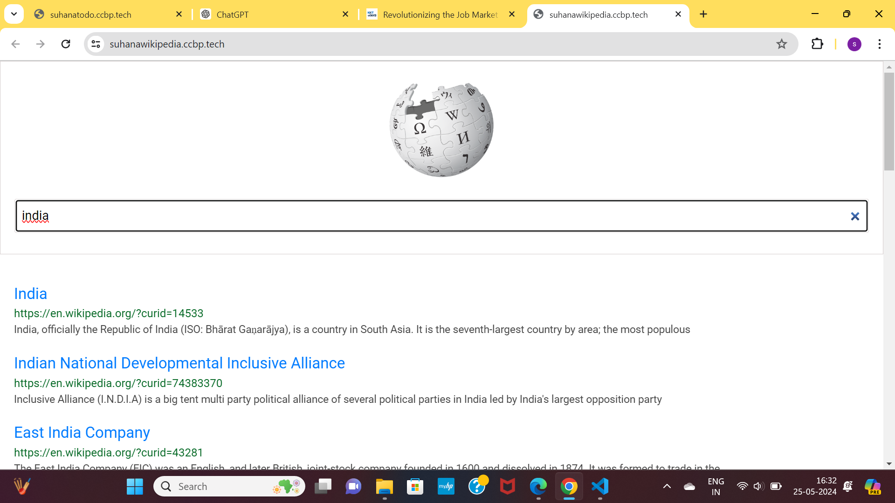

Earla Suhana Bhanu
I am currently pursuing my B.Tech in Computer Science and Engineering, now in my second year at Mohan Babu University. With a strong foundation in problem-solving and critical thinking, I am dedicated to continuously improving my skills and knowledge in the field of technology. I have enrolled in the NxtWave program, which has provided me with valuable insights into full stack development. Through this program, I have successfully completed numerous projects, enhancing my proficiency in various aspects of web and software development. My commitment to learning and passion for technology drive me to take on challenging projects and deliver innovative solutions.

As a proficient web designer, I possess a comprehensive understanding of the principles and techniques necessary to craft visually appealing and user-friendly websites. With a keen eye for design aesthetics and a solid grasp of HTML, CSS, and JavaScript, I have the essential skills to create dynamic and responsive web experiences.

As a Python developer, I possess a robust skill set tailored for web development. Proficient in Python frameworks like Django and Flask, I excel in crafting dynamic and scalable web applications. With expertise in database management systems such as SQL and MongoDB, I ensure seamless data handling.

As a Full Stack Developer, I possess a comprehensive skill set necessary for proficient web development. Equipped with expertise in both front-end and back-end technologies, including HTML, CSS, JavaScript, Node.js, and various databases, I ensure end-to-end functionality and seamless user experiences.
.png)
TODO LIST
Click,hereThe To-Do List application is a simple and intuitive tool for managing daily tasks. Built with HTML, CSS, and JavaScript, it allows users to add, edit, and delete tasks effortlessly. The clean and responsive design ensures usability across various devices. Each task can be marked as completed, providing visual feedback on progress. With real-time updates and local storage support, tasks persist even after refreshing the page. This application is perfect for organizing your day and enhancing productivity
.png)
RESTAURANT WEBSITE
Click,hereWelcome to our restaurant website, a visually appealing and user-friendly platform showcasing our culinary delights. Designed with HTML and CSS, the site features an elegant layout with mouth-watering images and a seamless navigation experience. Explore our diverse menu, learn about our chefs, and discover special offers. The responsive design ensures a flawless experience on any device, while integrated contact and reservation forms make booking a table effortless. Join us for a taste of exceptional dining!

WIKIPEDIA
Click,hereThis sample Wikipedia page showcases a user-friendly interface with a clean and responsive design, built using HTML for structure, CSS for styling, and JavaScript for dynamic functionality. The page includes a navigation bar, a search feature, and collapsible content sections to enhance user experience. The design is mobile-responsive, ensuring accessibility across various devices. CSS animations and transitions add subtle visual effects, making the page more engaging. JavaScript is used to handle user interactions.